Vehicle Expenses Automated — full illustrated user manual (HTML for browsers). Edit source: docs/i18n/fr/user-manual.md; regenerate with ./scripts/render-user-manual.sh.
Modifier la source (Markdown). Les navigateurs et le lecteur intégré à l'application ouvrent le HTML rendu :
- Web :docs/user-manual.html(régénérer avec./scripts/render-user-manual.sh)
- Application : Aide / À propos → manuel complet (HTML + captures d'écran fournies)Ne dirigez pas les utilisateurs finaux vers des URL brutes
.md: les navigateurs affichent uniquement du texte brut.
Suivi par caméra des pleins de carburant et des dépenses liées aux véhicules, avec synchronisation et sauvegarde multi-appareils en option sous vos comptes cloud.
Ceci est le manuel complet (captures d'écran + chaque étape). Sur le téléphone, Menu → Aide est un guide de démarrage plus court.
Non couvert ici : Importez d'anciennes images, une expérience d'alignement et une expérience de pompe (développeur/outils avancés).
Ceux-ci apparaissent sur les écrans principaux. Les connaître évite beaucoup de chasse.
| Où | Icône / contrôle | Ce qu'il fait |
|---|---|---|
| Barre supérieure | ☰ Menu (hamburger) | Ouvre le tiroir de navigation |
| Barre supérieure | ⓘ (page d'aide) | Aide courte pour la page actuelle (à côté du menu lorsqu'il est disponible) |
| Barre supérieure | ?N (jaune) |
Questions de révision d'importation en attente — ouvre la révision d'importation |
| Barre supérieure | ! (rouge) | Une feuille de calcul ou une destination de photo a récemment échoué : ouvrez Synchronisation pour corriger |
| Barre supérieure | ☰ + ← | Le rapport sur les enfants et la liste des dépenses affichent ** le menu et l'arrière ** ensemble ; Le hub de rapports est un menu uniquement |
| Paramètres / carburant modifier | ← | Retour (la feuille de calcul des paramètres/les modifications des photos et du carburant restent centrées sur l'arrière) |
| Remplissage rapide | Cercle blanc (obturateur) | Capturer l'affichage du compteur kilométrique ou de la pompe pour OCR |
| Remplissage rapide | Disque / Enregistrer | Économisez le plein (nécessite un véhicule et au moins un parmi odo / volume / coût) |
| Remplissage rapide | ↕ flèches (commutateur de mode) | Basculez le mode compteur kilométrique et le mode pompe (coût/volume). La bordure verte met en évidence le groupe de champs actif |
| Remplissage rapide | ↔ flèches (entre coût et volume) | Échangez le coût et le volume si l'OCR les place dans les mauvais champs |
| Remplissage rapide | Zoom 1x / … | Rapports de zoom de l'appareil photo lorsque l'objectif les prend en charge |
| Remplissage rapide (après capture) | Actualiser sur le bouton principal | Supprimer l'aperçu et revenir à la caméra en direct |
| Remplissage rapide (pendant le traitement) | X sur le bouton principal | Annuler la capture/OCR en cours |
| Dépense | Enregistrer | Économisez les dépenses |
| Dépense | Cercle d'obturation | Prendre une photo du reçu |
| Dépense | Galerie | Choisissez une image de reçu dans la bibliothèque |
| Dépense | Reprendre | Effacer la photo du reçu actuel et prendre à nouveau |
| Dépenses / Gérer les véhicules | + / − FAB | Zoomer l'aperçu de la photo |
| Boîte de dialogue Points de repère | Modifier l'OCR | Corriger ou ajouter un texte de repère que les moteurs ont manqué |
| Feuille de calcul / Formulaires photo | 🔍 Recherche | Parcourez Google Drive pour une feuille ou un dossier (après la connexion) |
Les symboles monétaires sur les champs de coût et G/L sur les champs de volume sont accessibles : ouvrez un petit menu pour changer la devise ou les gallons par rapport aux litres pour cette entrée.
Tiroir principal : Remplissage rapide · Commencer le voyage · Gérer les véhicules · Nouvelles dépenses · Rapports · Paramètres · Synchronisation · Aide · À propos.
Tiroir d'expériences (Paramètres → Afficher les écrans d'expérience) : Expérience d'alignement · Expérience de pompe · Importer d'anciennes images.
Via le hub Rapports (pas le tiroir principal) : Liste des dépenses · Historique de remplissage.
L'OCR et la correspondance automatique des véhicules fonctionnent mieux après avoir enregistré chaque véhicule avec une photo de référence du tableau de bord, recadré le compteur kilométrique et exécuté Découverte afin que l'application stocke le texte de repère pour ce tableau de bord. (La manière dont les points de repère sont choisis et associés sera documentée plus en détail dans une mise à jour ultérieure.)
Menu → Gérer les véhicules. Choisissez un véhicule (ou Ajouter un nouveau véhicule).


Après Afficher les points de repère, faites défiler la liste et corrigez les valeurs. Les moteurs manquent parfois de petits chiffres (par exemple une horloge 60 en bas à droite du cluster). Utilisez Modifier OCR pour les ajouter ou les corriger afin que l'identité du véhicule reste fiable.

Vous pouvez toujours utiliser l'application en sélectionnant un véhicule et en saisissant le compteur kilométrique, le volume et le coût sur Quick Fill - l'OCR est facultatif pour chaque champ. L'importation de galerie fonctionne pour la photo du tableau de bord de référence lorsque vous préférez ne pas prendre de photo dans l'application.
Conseil : Après la synchronisation de la feuille de calcul, les définitions de véhicules (cultures, points de repère) se trouvent dans la base de données locale. Vous n'avez pas besoin de rouvrir la gestion des véhicules pour le remplissage rapide pour les utiliser.
L'application est conçue pour que plusieurs téléphones ou tablettes puissent partager les mêmes données de flotte, et ainsi vous pouvez conserver une copie de vos données et photos hors de l'appareil. Cela se fait avec les destinations que vous configurez sous vos comptes ou vos serveurs auto-hébergés – et non avec un « cloud de dépenses de véhicule » géré par l'entreprise que d'autres personnes peuvent voir.
| Genre | Ce qu'il stocke | Utilisation typique |
|---|---|---|
| Feuille de calcul/synchronisation tabulaire | Véhicules, pleins de carburant, dépenses (lignes et onglets) | Fusion multi-appareils + sauvegarde structurée |
| Sauvegarde de photos | Images binaires (tableau de bord/pompe/reçu/photos de référence) | Sauvegarde de photos + restauration des fichiers manquants |
Vous pouvez configurer plusieurs destinations de chaque type (limite souple par type). Les travailleurs manuels Synchroniser maintenant et en arrière-plan exécutent ceux activés.
La connexion et les jetons restent sur l'appareil pour les fournisseurs que vous choisissez (Google, Microsoft, clés S3, URL auto-hébergées, etc.). Les destinations sont sous contrôle total de l'utilisateur : votre compte Google, votre OneDrive, votre compartiment MinIO, votre hôte EtherCalc, etc. Rien n'est partagé avec d'autres utilisateurs de Vehicle Expenses via un backend partagé.
Configuré sous Menu → Synchronisation → Synchronisation de la feuille de calcul (également accessible à partir des lignes récapitulatives des paramètres). Options de sélection de première classe :
| Cible | Remarques |
|---|---|
| Google Feuilles | Valeur par défaut commune ; onglets pour les véhicules, les dépenses et le carburant par véhicule |
| Excel | Classeur Microsoft via reliure de style Graph/OneDrive |
| ÉtherCalc | Salles de calcul collaboratives auto-hébergées |
| Autre → backends implémentés | Baserow, NocoDB, Airtable, PocketBase, Supabase, Firebase, Zoho Sheet |
Différé / pas encore sans tête (répertorié sous Autre mais pas entièrement implémenté) : OnlyOffice, Collabora. Voir aussi index auto-hôte.
CSV export/import (ZIP de la même disposition d'onglets) est disponible dans Paramètres en tant que sauvegarde portable, indépendante de la synchronisation en direct.
Configuré sous Menu → Synchronisation → Sauvegarde de photos (également à partir des lignes récapitulatives des paramètres) :
| Cible | Remarques |
|---|---|
| Google Drive | Dossier que vous choisissez (parcourir ou coller l'URL) |
| OneDrive | Compte Microsoft + préfixe de chemin |
| S3 | AWS, Wasabi, Cloudflare R2, MinIO et autres points de terminaison compatibles S3 |
| Autre | Stockage sauvegardé par rclone (par exemple WebDAV, SFTP et autres télécommandes organisées disponibles dans le sélecteur intégré à l'application) |
Configurez des aide-mémoire pour les cibles photo et tabulaires auto-hébergées : [index auto-hôte] (référence/auto-hôte/INDEX.md).


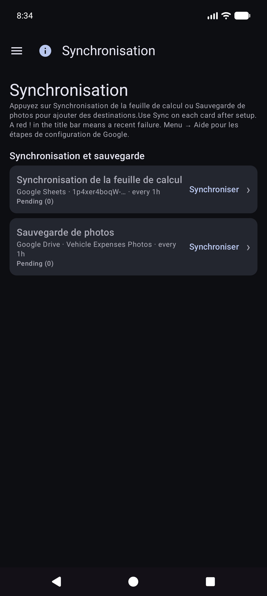
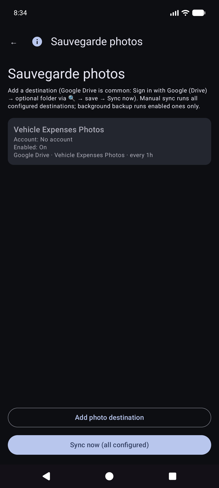


La Synchronisation manuelle maintenant pour les photos est une réussite complète ; la sauvegarde en arrière-plan traite généralement les téléchargements en attente uniquement selon une planification.
Il s'agit de l'écran d'accueil lorsque vous ouvrez l'application.
Vous n'avez pas besoin de choisir le véhicule en premier. Lorsque les véhicules ont des repères configurés dans Gérer les véhicules, Quick Fill détecte automatiquement quel véhicule à partir de l'image du tableau de bord après avoir capturé le compteur kilométrique. Vous pouvez toujours ouvrir la liste déroulante Véhicule pour remplacer si nécessaire.
Restez en mode compteur kilométrique et cadrez le cluster. Instruction : * Visez le compteur kilométrique. Appuyez sur l'obturateur pour capturer.*

L'OCR remplit Odo et essaie de faire correspondre le véhicule à partir des points de repère (vérifiez les deux si nécessaire). Le bouton principal devient Réessayer pour reprendre la photo. Les instructions résument la lecture.


Vous restez sur Quick Fill pour le prochain arrêt (les champs s'effacent après la sauvegarde). Travaillez entièrement hors ligne ; la synchronisation s'exécute plus tard en arrière-plan une fois configurée.
Astuce à l'écran (sous la ligne d'instructions) : Obturateur = capture · Disque = sauvegarde · ↕ = mode odo/pompe · ↔ = coût d'échange/volume.
Menu → Nouvelle dépense.
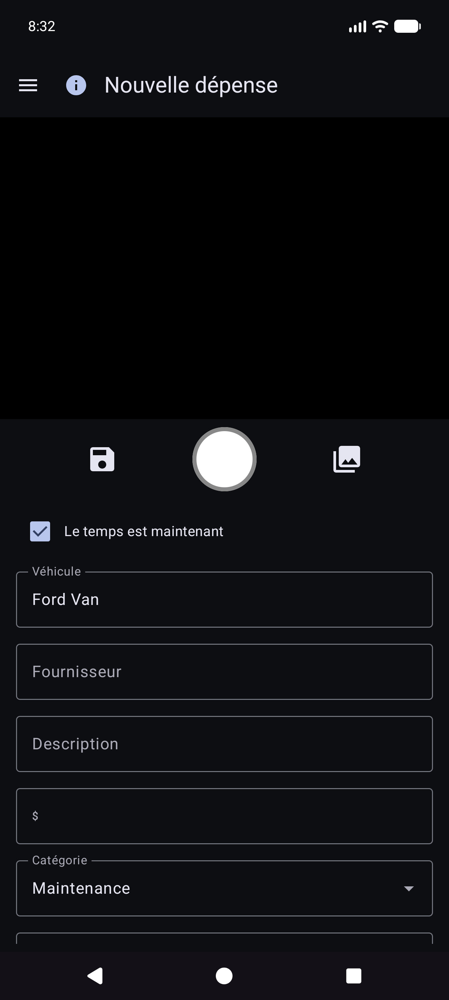
Menu → Rapports → Liste des dépenses — parcourez les dépenses passées hors carburant ; ouvrez un élément à modifier.
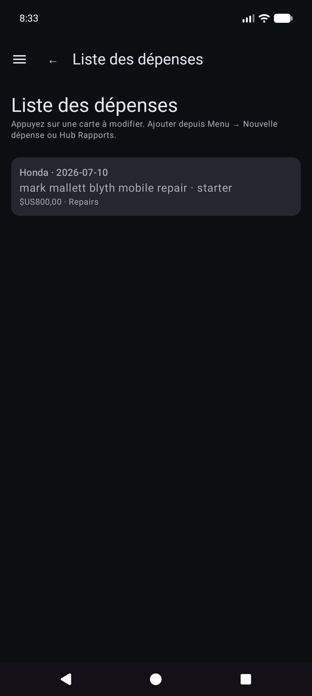
Ouvrez une ligne de la liste. Corrigez le fournisseur, le montant, la catégorie, le véhicule et la description. Si le reçu est uniquement dans une sauvegarde de photos (pas de fichier local lisible), utilisez Récupérer l'image des archives lorsqu'il est affiché (fonctionne sur les destinations photo configurées).

Menu → Démarrer le voyage (après remplissage rapide dans le tiroir). Capturez ou saisissez le compteur kilométrique, choisissez le type de trajet, enregistrez avec l'icône disque. Stop est un raccourci pour Personnel désormais à l'emplacement GPS retenu. Utilisez ⓘ pour les rappels de contrôle.

Les départs de voyage sont stockés sous forme de lignes de carburant avec un Type de voyage (pas de remplissages normaux). Ils apparaissent sous Rapports → Miles parcourus, et non sous Historique de carburant.
Menu → Rapports ouvre le hub de produits (résumé de tous les temps + fiches de catalogue). Il s’agit de la seule surface de rapports sur les produits : il n’y a pas d’élément de tiroir « Rapports et graphiques » distincts.

Ouvrez une carte pour le mode véhicule (Tous / Chaque / Unique), les filtres de période, les graphiques et le partage (TEXTE / CSV / PDF). Barre supérieure sur les enfants signalés : ☰ + ← (et ⓘ une fois inscrits).
La carte graphique principale. Mesures facultatives (mpg, volume/distance tel que G/mi, prix unitaire tel que $/G, coût/distance, $ mensuel, miles parcourus, % de trajet par type) avec bacs Smooth et échelles Y indépendantes (économie à gauche ; argent et familles de voyages à droite).
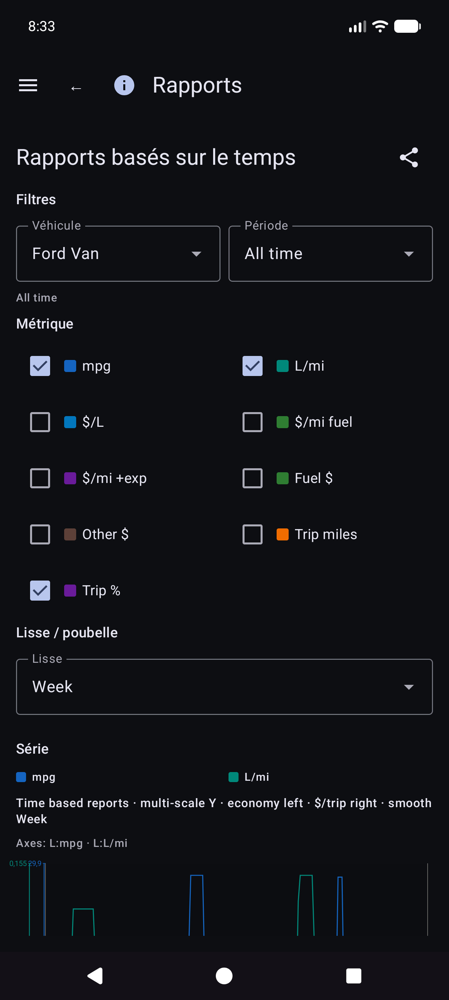
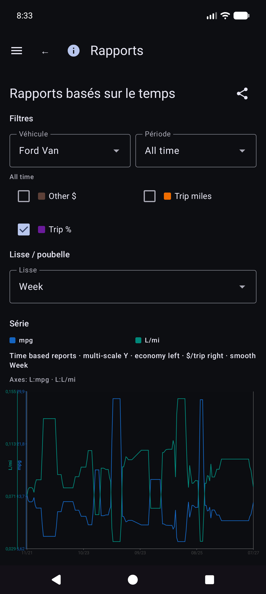
Détails des mathématiques économiques : REPORTS_METRICS.md.
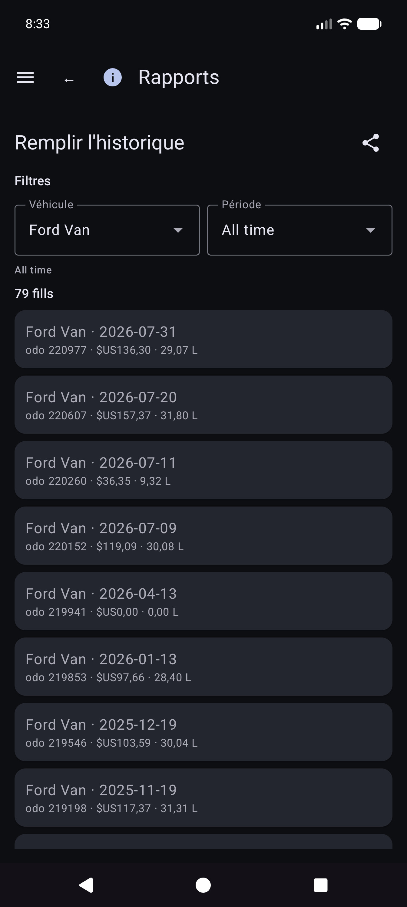
Rapports → Miles de voyage — miles par type, graphiques et liste chronologique de débuts de voyage/segments. Appuyez sur un véritable début pour ouvrir Modifier le remplissage pour cette ligne.
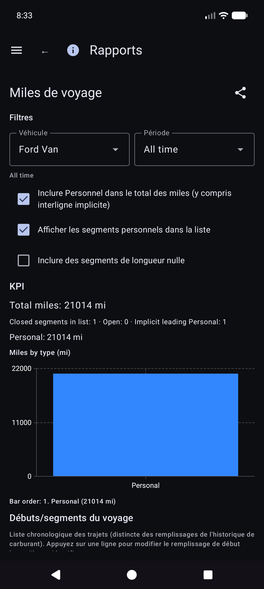
Dans Historique de remplissage, Historique de carburant ou Miles parcourus, ouvrez un remplissage. Mise en page : véhicule et compteur kilométrique, devise avant coût, volume, notes. Le type de voyage apparaît uniquement lorsque la ligne correspond à un début de voyage. L'emplacement comporte un résumé ainsi que des Détails de l'emplacement. Photo locale manquante avec identité cloud : Récupérer l'image des archives.
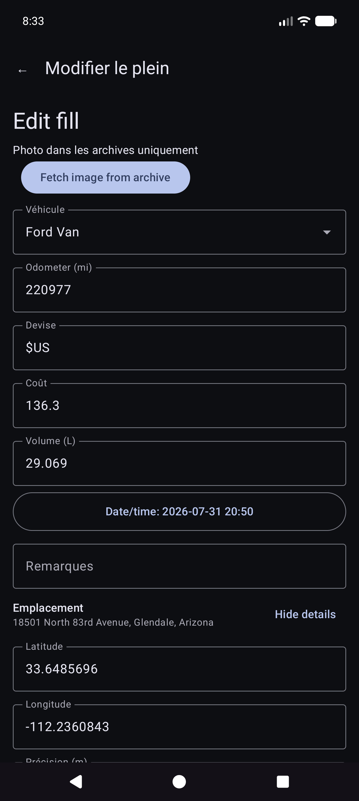
D'autres fiches de catalogue incluent les dépenses par catégorie, le résumé du véhicule et la liste des dépenses.
Money utilise la devise de chaque ligne lorsqu'elle est définie. Les totaux en devises mixtes affichent des sous-totaux par devise (pas de conversion FX silencieuse).
Menu → Synchronisation est la plaque tournante des feuilles de calcul et des destinations photo (pas seulement enfouies sous Paramètres).
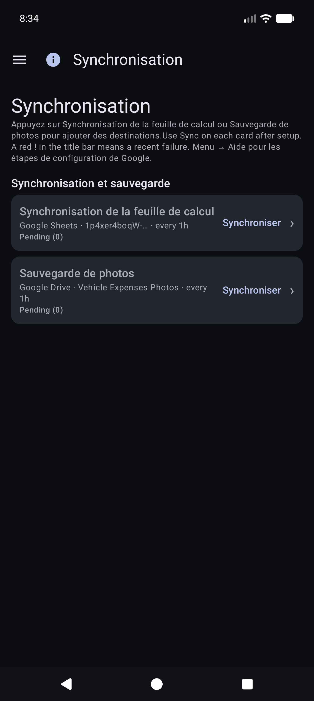
Menu → Paramètres.


Pour les destinations, préférez Menu → Synchronisation. Les paramètres peuvent toujours afficher des lignes récapitulatives qui ouvrent les mêmes listes.
CSV export/import (ZIP des onglets Véhicules / Dépenses / Carburant) est disponible depuis Paramètres lorsqu'il est proposé par la version actuelle.
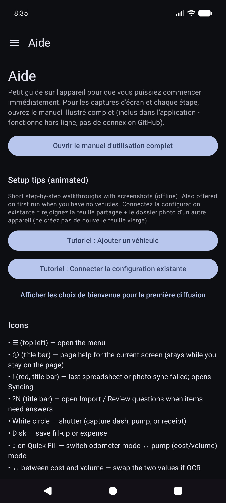